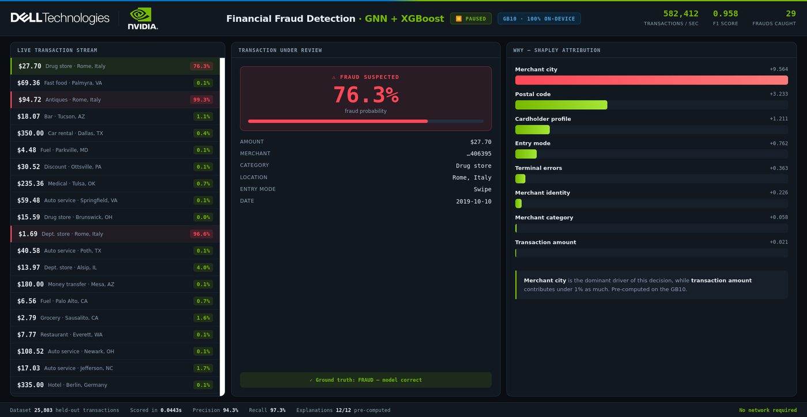
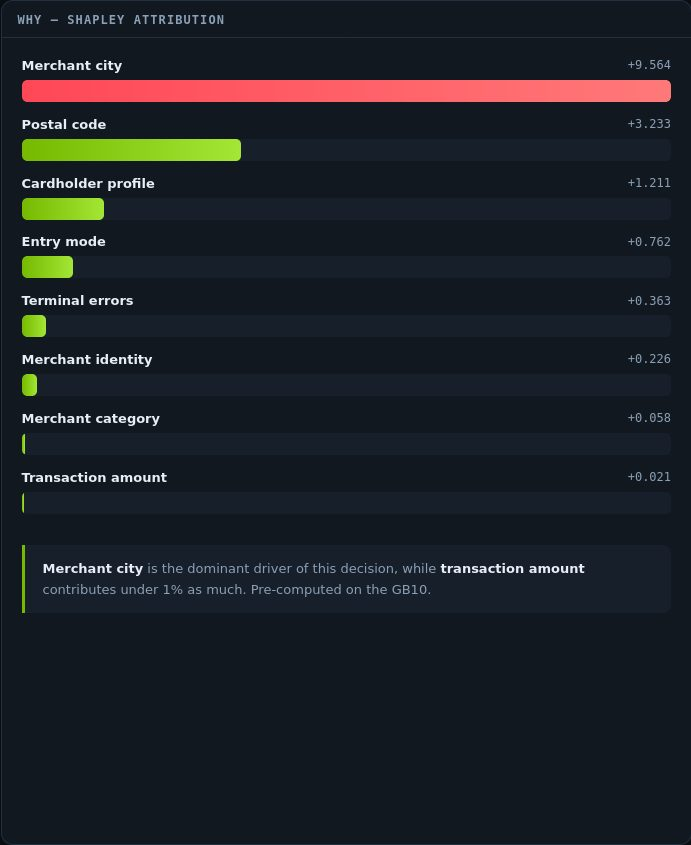
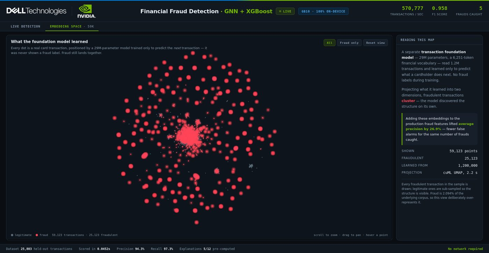

Finding fraud in the graph
A graph neural network scores card transactions in real time, and every decision arrives with the reasons behind it. It works because fraud lives in relationships — between cardholders, merchants and places — not in any single transaction.
In this dataset 0.122% of transactions are fraudulent — one in 819. A model that predicts “never fraud” is 99.88% accurate and completely useless. That imbalance is why accuracy is the wrong measure here, and why the cost of a false alarm has to be weighed against the cost of a miss.
The harder problem is that fraudulent transactions rarely look unusual on their own. Ordinary amounts, ordinary times, ordinary categories.
Mutual information correlation with the ground-truth fraud label (0.122% positive class):
Build the graph
Cardholders, transactions, and merchants become nodes; every payment becomes directed edges across 301,524 training transactions connecting 4,873 cardholders to 42,942 merchants.
Learn the neighbourhood
A GraphSAGE network aggregates 2-hop neighborhood structures, compressing each transaction and its surrounding subgraph into a dense 32-dimensional embedding — so a transaction is represented by the company it keeps.
Classify and explain
XGBoost scores those topological embeddings in 0.002 ms, while fast Shapley value sampling attributes each decision back to human-readable features on demand.

Transactions stream in at the left. When a high-risk pattern is detected, the transaction freezes in the centre with its topological details, while the feature attribution behind the decision appears on the right.
Nothing about the $98.04 amount is unusual. The explanation shows why: merchant city dominates the decision (+9.564 impact), while transaction amount contributes under 1% as much.

A second tab demonstrates an unsupervised architecture: a 29-million-parameter transaction foundation model with a 6,251-token financial vocabulary, trained purely to predict a cardholder's next transaction — without ever seeing a fraud label.
When projected into two dimensions across 59,123 transaction points, fraud forms dense geometric clusters on its own. Adding these learned embeddings to production fraud features lifted average precision by 26.9% — catching the same fraud with substantially fewer false alarms.

A $98.04 card-present purchase at a clothing merchant. Within the cardholder's normal spending range. No velocity breach. No flagged category. Approved.
That merchant sits in a cluster where several compromised cards were used within days, in a city this cardholder has never transacted in. Flagged at 98%.
Why is 0.958 an F1 score and not "95.8% accurate"?
At a 0.122% fraud rate, a model that never flags anything is 99.88% accurate. Accuracy rewards ignoring the problem, so it is the wrong measure entirely.
F1 balances two things a fraud team actually argues about: precision — of the transactions we flagged, how many were really fraud, which is the cost in false alarms and blocked customers — and recall — of the real fraud, how much did we catch.
Here that is 94.3% precision at 97.3% recall. Where you sit between those two is a business decision about the cost of a declined good customer versus a missed fraud, not a modelling one.
Preprocessing undersamples the majority class, so the held-out set runs at 8.09% fraud against a true base rate of 0.122%. At the real rate the false-positive economics change materially, and any pilot must be re-measured on live distributions. The train/validate/test split is temporal — before 2018, 2018, after 2018 — so it is a backtest rather than a shuffled split.
The interface also shows ground truth on every transaction, including its 123 false positives and 56 misses. That is deliberate.